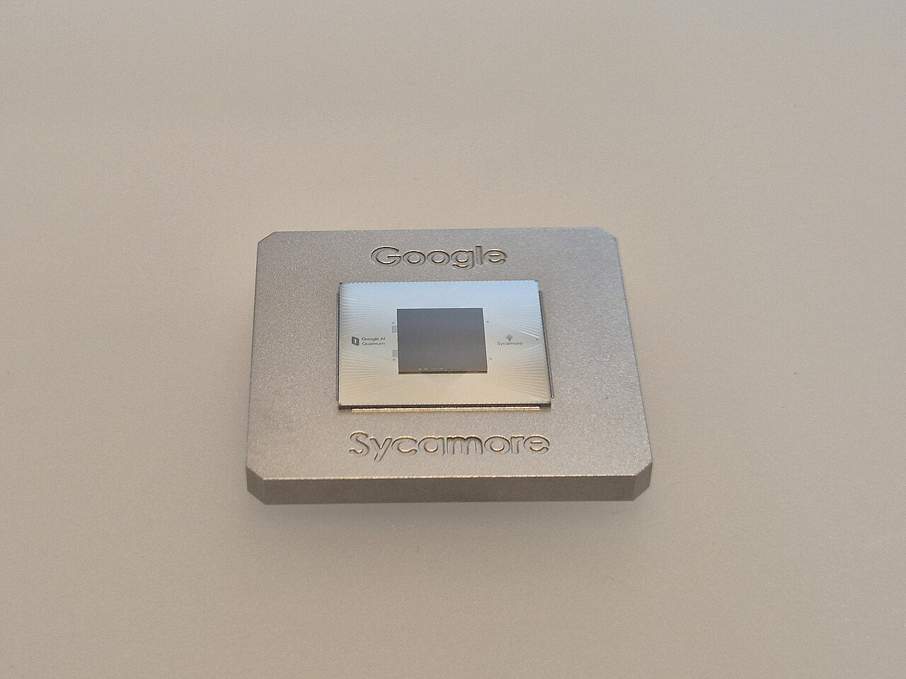

Prefer to watch?
8 minutes · From the superconducting oscillator to the Bell state
Chapter 1
From Arrows to Qubits
In the quantum physics post we described the world using rotating arrows: every possible event gets an arrow that spins with time. At the destination, all arrows add up. Where they reinforce, the event is likely. Where they cancel, it's impossible.
Mathematicians call these arrows amplitudes. They are complex numbers – and because every complex number can be drawn as an arrow in the plane, they each carry a length (the magnitude) and an angle (the phase). The length squared gives the probability of measuring the associated state – the Born rule, formulated in 1926. From the phase follows why two amplitudes can add or cancel when they overlap: the heart of interference, which distinguishes quantum mechanics from every classical probability calculus.
And now for the bridge: a qubit is exactly such an arrow.
Classical bit: 0 or 1.
Qubit: a combination of both, written as
\(\alpha\) and \(\beta\) are complex numbers – two arrows. One for “system is 0,” one for “system is 1.”
The angle brackets are called ket notation, introduced in 1939 by Paul Dirac – the same Dirac whose eponymous equation had a few years earlier predicted the existence of antimatter. A ket \(|\psi\rangle\) denotes a quantum state, and in its simplest representation it is a column vector: \(|0\rangle\) becomes \(\binom{1}{0}\), \(|1\rangle\) becomes \(\binom{0}{1}\). But Dirac wanted more than compact state notation. Every ket has a partner bra \(\langle \phi|\) – its conjugate transpose. The product \(\langle \phi | \psi \rangle\) measures the overlap between two states, and is therefore, right there in the notation, the amplitude to find \(\psi\) in \(\phi\). The bracket form carries the structure of measurement directly into the typography.
When you measure, you get either 0 or 1 – never anything in between. The probabilities are the squared lengths of the two arrows:
The sum of those two squared magnitudes is always 1. This is the normalization condition, and it is not just a rhetorical equals sign: Max Born postulated in 1926 that \(|\psi|^2\) gives the probability density – he received the 1954 Nobel Prize precisely for this statistical interpretation of the wave function. Without normalization, the Born rule cannot be formulated consistently; probabilities greater than 1 would become possible and the concept would lose its physical meaning. Every admissible qubit state therefore lives on a sphere of radius 1 – the famous Bloch sphere, which we meet in the next chapter.
Why not just a bit with randomness?
At this point computer scientists often think: “Wait, isn't a qubit just a bit with a probability attached? So a fair coin flip?”
No. The difference is interference. Amplitudes can cancel each other out – probabilities can't. A probability of 0.5 cannot become 0 by combining with another 0.5. But two arrows pointing in opposite directions absolutely can.
This interference is exactly why quantum computers can have a computational advantage in the first place. Without phases that can cancel, qubits would be functionally equivalent to classical probabilistic bits – a model computer science has studied exhaustively since the 1970s, and in which no exponential speedups are hiding.
A qubit, then, is: a classical state in superposition, with two amplitudes whose squared lengths add to 1. Those amplitudes can carry complex phases, which is what enables interference.
Chapter 2
How a Qubit Comes to Life in the Lab
Before we start computing with gates, a look at the hardware is worth it. A qubit is an abstract concept – but in the lab it is always a concrete physical system with two cleanly separated states. As of 2026 there are at least four major technologies in commercial use, and each has its own physics.
The superconducting qubit – Google's and IBM's favourite
The platform on which most large quantum computers operate today is a curiously named thing: a superconducting oscillator. To understand why it shows quantum behaviour at all, a detour through classical electrical engineering helps.
Brief trip into classical physics. An LC oscillator is the simplest circuit that rings on its own. A coil (inductance \(L\)) and a capacitor (capacitance \(C\)) together form an electromagnetic swing: current shuttles between them back and forth, just as a swing moves between its rest position and its turning point. The natural frequency is \(f = \tfrac{1}{2\pi\sqrt{LC}}\). Such oscillators sit inside every old radio, every remote control, every quartz clock.
A detail that will matter in a minute: the frequency of the oscillation is fixed by the components \(L\) and \(C\) – just as on a real swing, where the period depends only on the rope length, not on how high you swing. What does vary is the amplitude: the maximum charge on the capacitor, equivalently the maximum current through the coil. And the amplitude determines the energy, \(E = \tfrac{Q_\text{max}^2}{2C}\): double the peak charge, four times the energy. Classically, any amplitude is allowed, and therefore any energy – smooth and continuous from tiny to huge.
Now the quantisation. Cool a specially designed oscillator to near absolute zero – typically 10 millikelvin, colder than intergalactic space – and add a very particular component called a Josephson junction (a thin insulating layer, just a few atomic layers thick, between two superconductors, through which coupled electron pairs tunnel quantum-mechanically – Brian Josephson was awarded the 1973 Nobel Prize for this 1962 prediction). Now something remarkable happens: the possible oscillation amplitudes are no longer continuous. The system can only swing at specific, separated amplitudes – and therefore can only take specific energy levels, like the rungs of a ladder.
The frequency of the oscillation stays fixed, by the way – still set by \(L\) and \(C\). What gets quantised is the amplitude, not the tempo. What classically was a continuous swing is now, quantum-mechanically, a selection from a discrete set of allowed deflections.
The bottom two rungs – the ground state and the first excitation – serve as our qubit: the ground state is \(|0\rangle\), the first excitation \(|1\rangle\). The energy gap between them corresponds to an electromagnetic frequency of roughly 5 GHz. That is not an arbitrary number – it is the microwave frequency with which we will drive the qubit later.
One crucial detail: why do we use only the lowest two rungs? A pure LC oscillator (without the Josephson junction) would produce equally spaced discrete levels – the textbook harmonic oscillator. A microwave pulse tuned to excite \(|0\rangle \to |1\rangle\) would then unavoidably also trigger \(|1\rangle \to |2\rangle\) and beyond – the qubit could not be confined to its two lowest rungs. The Josephson junction introduces a nonlinearity that warps the ladder: rungs get closer together as you go up. This lets us tune a microwave pulse so precisely to the \(|0\rangle\leftrightarrow|1\rangle\) transition that higher levels simply aren't excited. That selectivity is what turns a quantum oscillator into a usable qubit.
Why does the cold make the difference? Two reasons. First: at room temperature the system jitters thermally – it constantly jumps between many states, and the clean \(|0\rangle\) and \(|1\rangle\) drown in the noise. At 10 mK the thermal energy is so tiny (\(k_B T \approx 0.001\) µeV) that the qubit stays in its ground state unless we deliberately excite it. Second: superconducting materials lose their electrical resistance entirely below a critical temperature. Current flows without loss, and the oscillation does not decay immediately. Together – no thermal jitter, no loss – these properties turn a mundane-looking circuit into a clean quantum two-level system.
Other platforms – the qubit has many homes
The superconducting path is only one option. The other major families:
- Ion trap (IonQ, Quantinuum): A single charged atom – typically a calcium or ytterbium ion – is suspended by oscillating electromagnetic fields in a vacuum. The ion's electrons occupy discrete energy levels; two of them are chosen as \(|0\rangle\) and \(|1\rangle\). This is exactly the physics you know from the Bohr atomic model: electrons in shells.
- Neutral atom (QuEra, Atom Computing): Similar to ion traps, but without electrical charge. Single atoms are held in a lattice by tightly focused laser beams – so-called optical tweezers. Again, the qubit states are two different electron energy levels.
- Photon (PsiQuantum, Xanadu): A single light particle, exactly like in the double-slit experiment from the quantum physics post. The two states are usually polarisation directions: horizontal = \(|0\rangle\), vertical = \(|1\rangle\). Photons are especially attractive for quantum communication, because they travel through optical fibres easily.
Each platform has its own strengths and tradeoffs. Superconductors are fast (gates in nanoseconds) but need extreme cooling and large infrastructure. Ions are extremely precise with long coherence times, but their gates take microseconds. Photons travel through cables but are hard to pack into large lattices. The community in 2026 does not yet know which of these technologies will ultimately scale – possibly different applications will use different ones.
In this post we stick with the superconducting qubit, because it lets us build the most concrete physical intuition. But every abstract \(|0\rangle\) and \(|1\rangle\) that appears in the following chapters refers, in the background, to one of these physical mechanisms. And every gate operation that we are about to formulate mathematically is, ultimately, an electromagnetic pulse – microwave for superconductors, laser for ions, phase shifter for photons.
Chapter 3
The Bloch Sphere
Two complex numbers \(\alpha\) and \(\beta\) with the constraint \(|\alpha|^2 + |\beta|^2 = 1\) – that's four real degrees of freedom with one constraint. So three. Plus: a global phase is physically irrelevant (we can't measure it). So two.
Two parameters – that's a surface. And a very specific one: the surface of a sphere.
\(\theta\) is the polar angle (north–south), \(\varphi\) the azimuth (longitude-like). Every pure qubit state is a point on this sphere.
- North pole (\(\theta = 0\)): pure \(|0\rangle\)
- South pole (\(\theta = \pi\)): pure \(|1\rangle\)
- Equator (\(\theta = \pi/2\)): perfect 50/50 superposition, phase running around the longitude
A brief irritation up front – why \(\theta/2\), not \(\theta\)? The formula above parameterises with the half polar angle. That is not a typo and not just convention – it is the only way to place the qubit states unambiguously on a sphere. As \(\theta\) runs from 0 to \(\pi\), \(|\psi\rangle\) moves from \(|0\rangle\) to \(|1\rangle\). If the exponent were \(\theta\) instead of \(\theta/2\), we would already be back at the starting state at \(\theta = 2\pi\) – a full turn on the sphere would correspond to just half a turn in state space. The half angle is the geometric fingerprint of a deep quantum property: qubits (like all spin-\(\tfrac{1}{2}\) particles) need two full rotations in physical space to return to their original state. This is the famous belt trick of physics, and it will show up again when we discuss unitary gates.
The Bloch sphere is the space of all possible qubit states, and every quantum gate corresponds to a specific rotation of that state vector on the sphere. This is not merely graphically convenient – it is mathematically deep: the allowed single-qubit operations form the group \(SU(2)\), the family of all unitary \(2\times 2\) matrices with determinant one. And \(SU(2)\) relates to the ordinary rotation group \(SO(3)\) as two to one: every \(360^\circ\) rotation in physical space corresponds to half a turn on the Bloch sphere – exactly as above. Hence the half angle. Hence two rotations to return to the starting state.

Try it ↓
Drag the sliders and watch the state vector move. Press Hadamard to tip \(|0\rangle\) onto the equator – that's the superposition \(\frac{1}{\sqrt{2}}(|0\rangle + |1\rangle)\).
Why is this useful? Because it becomes geometric. A quantum algorithm looks on the Bloch sphere like a choreographed sequence of rotations. The Pauli gates \(X, Y, Z\) are 180° rotations about the respective axes. The Hadamard matrix is a 180° rotation about a diagonal axis that swaps north and equator.
Remember: A qubit is a point on a sphere. A gate is a rotation. An algorithm is a choreography.
Chapter 4
Quantum Gates: Matrices that Rotate the World
A classical logic gate takes bits and returns bits. An AND gate turns (1, 1) into 1 and (1, 0) into 0. Simple, irreversible – from a 0 at the output you cannot reconstruct which pair of input bits produced it.
A quantum gate is different. It's a unitary matrix that transforms the state vector of a qubit (or several). Unitary means:
- length-preserving: the normalization \(|\alpha|^2 + |\beta|^2 = 1\) is kept
- reversible: every gate has an inverse. Rewinding is always possible
- continuous: unlike classical gates there isn't a finite set, there's an entire continuum
The Hadamard: the quantum coin
The most important single-qubit gate is the Hadamard, \(H\):
What does it do? Apply it to \(|0\rangle = \binom{1}{0}\):
A pure 0 becomes a perfect 50/50 superposition. The quantum coin flip. And because \(H\) is unitary: apply it again and you're back at \(|0\rangle\). No classical coin flip can do that.
Pauli gates: X, Y, Z
The three Pauli matrices are 180° rotations about the respective axes of the Bloch sphere:
\(X\) is the quantum counterpart of classical NOT: \(X|0\rangle = |1\rangle\). \(Z\) flips the phase of \(|1\rangle\) (but leaves the measurement outcome unchanged). \(Y\) does both.
CNOT: two qubits, one gate
The most important two-qubit gate is CNOT (controlled-NOT). It takes two qubits: a control and a target. If the control qubit is 1, the target flips. Otherwise nothing happens. Its matrix is \(4 \times 4\), because two qubits have four classical states (\(|00\rangle, |01\rangle, |10\rangle, |11\rangle\)):
CNOT is the hinge to entanglement. Without CNOT (or another two-qubit gate) every quantum computer would be a heap of independent coins. With CNOT they become a correlated whole.
Bridge to the eigenvalue post: Unitary matrices have a beautiful property: all of their eigenvalues lie on the unit circle. That's the deep reason quantum gates are reversible: they don't stretch or shrink anything – they only rotate. The spectral decomposition of a unitary matrix is a choreography of rotations on different eigenvector axes.
Universality
How many gates do you need? Remarkably few. The combination of H, T (a 45° phase) and CNOT suffices to approximate any unitary transformation to arbitrary precision. This is the quantum analogue of NAND being a universal classical gate.
Try it ↓
Click to place gates on the wires and watch how the state vector changes. After H on qubit 0, then CNOT, the famous Bell state emerges – two qubits entangled forever.
Chapter 5
Your First Quantum Circuit: the Bell State
The Bell state is the “Hello World” of quantum computers. Two qubits, two gates, an effect that breaks classical physics. And you can build it in three lines of Qiskit.
The circuit
Start with two qubits in state \(|00\rangle\). Apply Hadamard to qubit 0. Then CNOT, with qubit 0 as the control:
|0⟩ --[ H ]---*----
|
|0⟩ ----------X----Mathematically: \(H\) turns \(|00\rangle\) into \(\frac{1}{\sqrt{2}}(|00\rangle + |10\rangle)\). Now CNOT: if the first qubit is 1, flip the second. \(|10\rangle\) becomes \(|11\rangle\). Result:
What does that mean? The two qubits are perfectly correlated. If you measure the first and get 0, you get 0 on the second – with 100% certainty. If you measure 1, you get 1. But before the measurement, neither qubit was in a definite state.
That is entanglement. And it is not classical randomness: the first qubit could have yielded 1 just as well, in which case the second would have yielded 1 too. The outcomes are not predetermined, but they are jointly predetermined.
Why is this powerful?
Entanglement is the resource that gives quantum computers their power. Two independent qubits are two coins – four possible states, a probability distribution over them. Two entangled qubits are something qualitatively different: a joint state that cannot be decomposed into a product.
With \(n\) qubits the state space grows exponentially: \(2^n\) amplitudes. At 50 qubits that's \(2^{50} \approx 10^{15}\) – a quadrillion complex numbers that simultaneously influence each other through interference. No classical computer can simulate that. That's exactly what quantum advantage is.
Try it ↓
The simulator runs 1000 measurements. You should see roughly 500 \(|00\rangle\) and 500 \(|11\rangle\) – but never \(|01\rangle\) or \(|10\rangle\). That's the signature of entanglement.
Bridge to the quantum physics post: In that post we saw the Bell test – the proof that these correlations have no classical explanation. Alain Aspect won the 2022 Nobel Prize for it. What we see as a browser simulation here, IBM measures on real hardware and publishes as a Quantum Volume benchmark.
Chapter 6
What Quantum Computers Can Do – and What Headlines Leave Out
“Quantum computers are a million times faster than classical ones.” You read that sentence in press releases all the time. It's true only for very specific problems. For Excel, ChatGPT, or video editing, quantum computers are slower, more expensive, and more error-prone.
But there is a handful of problems where they are fundamentally superior. The three most important:
1. Shor (1994): factoring large numbers
Peter Shor showed in 1994: a quantum computer can factor a number \(N\) in \(O((\log N)^3)\) steps. The best classical algorithm (General Number Field Sieve) needs \(e^{O((\log N)^{1/3})}\) – sub-exponential, but still far slower.
Concretely: factoring a 2048-bit RSA number takes billions of years classically. A fault-tolerant quantum computer with a few million physical qubits could do it in hours.
This is why post-quantum cryptography has been a NIST standard since 2024: ML-KEM (key encapsulation), ML-DSA (signatures), SLH-DSA. The world is migrating now – not because quantum computers can crack RSA today, but because “harvest now, decrypt later” is a real threat model. Encrypted traffic captured today could be readable in 15 years.
2. Grover (1996): searching unsorted databases
Grover's algorithm finds an entry in an unsorted database of \(N\) entries in \(O(\sqrt{N})\) steps. Classically: \(O(N)\). That's not exponentially faster – only quadratically. But broadly applicable.
For a database with one billion entries: classically one billion operations, Grover roughly 31,623. That's significant. For combinatorial search, constraint satisfaction, certain ML problems.
The catch: Grover doesn't simply race through the database faster. It requires the problem as an oracle circuit. Each “query” is a unitary that marks a particular entry. In practice that's often expensive to construct.
3. Quantum simulation: molecules and materials
Here's the killer use case. The Schrödinger equation for a molecule with \(n\) electrons lives in a state space of dimension \(2^n\). Classical simulation scales poorly – precise ab-initio calculations for larger molecules are not feasible.
A quantum computer is itself a quantum system. It can encode a molecular Hamiltonian directly into qubits and then simulate the time evolution. This was Richard Feynman's original idea from 1982: “Nature isn't classical, dammit, and if you want to make a simulation of nature, you'd better make it quantum mechanical.”
Applications: new drugs, catalysts for green hydrogen, high-temperature superconductors, better batteries. This is where experts expect the first real economic quantum advantage – probably in the 2030s.
What does NOT get faster
A quantum computer is not a better laptop. It is a special-purpose processor that exploits particular mathematical structures – wherever interference and entanglement bring a computational advantage.
For anything that is predominantly linear algebra with large dense matrices (training neural networks on classical data, video encoding, database operations), quantum computers have no advantage. Even the often-quoted exponentially fast database search is a misunderstanding – Grover is quadratic, not exponential.
Chapter 7
What They (Still) Can't: The Honest Status 2026
If you want to play rock-paper-scissors with a quantum computing enthusiast, trump scissors with: “Yes, but how many logical qubits does it have?” That single word reveals the widest gap between hype and reality.
Physical vs. logical qubits
A physical qubit is a real thing: a superconducting loop, a trapped ion, a nitrogen-vacancy center in diamond. It is fragile. Any interaction with the environment – heat, stray electromagnetic fields, vibration – destroys the delicate phase relations. This is called decoherence.
Typical coherence times in 2026 for superconducting qubits are on the order of 100 µs to a few milliseconds. After that the qubit is noise. With gate times of ~50 ns, that's at most a few tens of thousands of operations – and errors accumulate during that window.
A logical qubit is the solution: you encode a single “clean” qubit in many physical ones, so that errors in individual physical qubits can be corrected before they destroy the logical one. The surface code (current standard) requires roughly 1000 physical qubits for a sufficiently error-free logical qubit.
Google Willow, IBM Heron, IonQ Tempo – the state of 2026

In December 2024 Google released Willow: 105 superconducting qubits. The breakthrough wasn't the count but the demonstration that larger codes reduce errors (below-threshold) – a milestone in error correction, though not yet a single fully fault-tolerant logical qubit.
IBM's roadmap targets scalable error correction with the Nighthawk chip (120 qubits, 2025) and Kookaburra (multi-chip, 2026). The target Starling (200 logical qubits) is announced for 2029.
IonQ, Quantinuum, and QuEra pursue different approaches (ion traps, neutral atoms). These have longer coherence times but are slower. The “best” approach is still open in 2026.
NISQ: Noisy Intermediate-Scale Quantum
The term was coined in 2018 by John Preskill and describes the current era: hundreds of noisy qubits, no full error correction, interesting but not superior computations. NISQ algorithms like VQE and QAOA still (as of April 2026) show no demonstrable practical advantage over the best classical heuristics. Announcements happen, but claims are regularly overtaken by better classical methods.
When will it matter practically?
Conservative estimates (MIT Review, McKinsey, industry consensus): A “commercially relevant” fault-tolerant quantum computer – one that runs Shor against 2048-bit RSA or simulates an enzyme active site that is classically impossible – is expected in the 2030s. Some skeptics say “never,” some enthusiasts say “2027.” The consensus: it will happen, but not immediately.
What you will NOT have soon:
• Quantum ChatGPT (language models gain little from quantum computing)
• Quantum Excel or Quantum SAP
• Real-time crypto crackers next year
• “10,000x faster AI training” – that's a marketing phrase, not a technical claim
That's not bad. The transistor was a lab curiosity in 1948. By 1965 there were maybe 30 in a commercial chip. In 2026 billions sit in your phone. Quantum computers are currently somewhere between 1948 and 1965.
Chapter 8
Programming Quantum Computers with Qiskit
The best part comes at the end: you can try all this right now. IBM offers real quantum hardware on a free tier via quantum.cloud.ibm.com: 10 minutes of QPU time per month on machines with 100+ qubits. Free, after sign-up.
The Bell state in 10 lines of Python
Qiskit is IBM's SDK. It runs as a Python library and translates circuits to QASM – a low-level language the chip understands.
from qiskit import QuantumCircuit
from qiskit_aer import AerSimulator
# Circuit with 2 qubits and 2 classical bits
qc = QuantumCircuit(2, 2)
qc.h(0) # Hadamard on qubit 0
qc.cx(0, 1) # CNOT: qubit 0 controls, qubit 1 is target
qc.measure([0, 1], [0, 1])
# Simulator: 1024 measurements
simulator = AerSimulator()
result = simulator.run(qc, shots=1024).result()
counts = result.get_counts()
print(counts)
# {'00': ~512, '11': ~512} – no cross combinations!That's it. Three gates, one measurement, and you've created a Bell state. The output is two numbers summing to 1024 – no \(|01\rangle\) or \(|10\rangle\) in between.
Running on real hardware
Two more lines and the same code runs on a real IBM quantum processor in Yorktown Heights or Ehningen:
from qiskit_ibm_runtime import QiskitRuntimeService, SamplerV2
service = QiskitRuntimeService(channel="ibm_quantum_platform")
backend = service.least_busy(simulator=False, operational=True)
# Transpile circuit to the chip's topology
from qiskit import transpile
qc_transpiled = transpile(qc, backend)
sampler = SamplerV2(mode=backend)
job = sampler.run([qc_transpiled], shots=1024)
print(job.result()[0].data.meas.get_counts())On real hardware you won't see exactly 512/512. Maybe 490/508 and 8 instances of “garbage” – \(|01\rangle\) or \(|10\rangle\), which shouldn't occur. Those are the noise, decoherence, and gate errors from the previous chapter. Welcome to the real world.
Try it ↓
The playground runs the code above in your browser (JavaScript simulation – a real QPU is one click away via the “Open on IBM Quantum” button). Swap gates and watch the histogram change.
The complete package – four notebooks with Bell state, Deutsch-Jozsa, Grover, and VQE for H2 – is open on GitHub: github.com/pmmathias/quantum-computing. Fork it, run it, change it.
Chapter 9
Quantum ML: Hype or Future?
If AI is the mega-topic and quantum computing is the exotic frontier, then quantum machine learning is the perfect buzzword sandwich. It has filled entire conference halls since 2018. What part of it is substance, what is PowerPoint?
Variational Quantum Eigensolver (VQE)
VQE is the most used NISQ algorithm. It finds the ground state of a Hamiltonian – the eigenvector with the smallest eigenvalue. That is directly relevant for chemistry: the ground-state energy determines whether a molecule is stable, how it reacts, what spectral lines it produces.
The idea: a parameterized quantum circuit prepares a trial state \(|\psi(\vec{\theta})\rangle\). The quantum computer measures the expectation \(\langle \psi | H | \psi \rangle\). A classical optimizer adjusts the parameters \(\vec{\theta}\) to minimize that expectation. A hybrid algorithm – quantum and classical working together.
VQE is robust to moderate qubit errors because the optimizer partially compensates for them. That makes it one of the few algorithms that make sense on today's NISQ hardware.
Quantum Kernel Methods
In the eigenvalue post we saw: the kernel trick measures similarity between data points without computing the explicit feature map. The result is a matrix whose eigenvalues govern what the model learns.
The idea of quantum kernel methods: use a quantum circuit to define a kernel function that is classically not efficiently computable. Schematically:
\(\phi(x)\) is a parameterized quantum circuit that embeds classical data into qubits. The measurement returns a scalar that fills the kernel matrix. The rest runs like classical kernel ridge regression.
The promise: quantum kernels could detect structures in data inaccessible to classical kernels.
The honest status in 2026: no demonstrated practical advantage yet. There are theoretical arguments (Havlicek et al. 2019), but on real datasets a classical RBF kernel still (as of April 2026) beats most quantum kernels. This could change once fault-tolerant hardware is available.
What quantum ML does NOT do
• It does not speed up training of large neural networks. LLMs like GPT-4 or Claude don't need quantum computers.
• It doesn't solve the “data loading problem”: loading a classical dataset of size \(N\) into a quantum state costs \(O(N)\) gate operations. Any claimed exponential speedup is often eaten up by that.
• It is not the solution to hallucinations, bias, or explainability in AI. Those are fundamental problems untouched by hardware.
But for very specific problems – eigenvalue problems of large Hamiltonians, quantum chemistry classification, certain combinatorial optimizations – quantum computers could play a role in the 2030s. That's the honest answer.
Epilogue
The Glass Bead Game
Let's look back. In nine chapters we built a chain:
- A qubit is a rotating arrow from the quantum physics post – a complex amplitude plus a second one.
- The state space is the Bloch sphere.
- Quantum gates are unitary matrices – rotations that move the sphere.
- Unitary matrices have eigenvalues on the unit circle – the bridge to the eigenvalue post.
- The quantum Fourier transform – the heart of Shor's algorithm – is a unitary operation that maps a state's amplitudes to their Fourier coefficients. It is the quantum counterpart to the classical Fourier transform from the flight-simulator post, where it drives the ocean-wave simulation. The same mathematical operation – decomposing a function into frequency components – powers sea swells, JPEG compression, and the factoring of large integers.
In the quantum post Schrödinger wrote in 1926: “Quantization as eigenvalue problem.” In the eigenvalue post we added: “Intelligence as eigenvalue problem.”
Today we can add a third line:
“Quantum computing as rotational choreography.”
The same unitary matrices. The same eigenvalues. A different context. The beauty of the glass bead game is not that everything is the same – it's that so many different phenomena share the same mathematical structure.
A qubit in an IBM lab, a PageRank algorithm at Google, a standing wave in an atom: three worlds, the same mathematics. Whoever understands the mathematics understands all three.
And now you can. Fork the notebooks. Run the code.
Related posts: This post builds on “Quantum Physics with Arrows” (amplitudes, superposition, entanglement) and points to “Eigenvalues & AI” (unitary matrices, kernel trick). The grand synthesis lives in “The Glass Bead Game”.
Frequently Asked Questions
What is a qubit in simple terms?
A qubit is the quantum counterpart of a classical bit. Instead of 0 or 1, it can be a combination of both – a superposition. Mathematically, it is a point on the surface of a sphere called the Bloch sphere. Only upon measurement does it collapse to a definite 0 or 1, with probabilities given by the point's position on the sphere.
What is the difference between classical and quantum computers?
Classical computers compute with bits (0 or 1) and deterministic operations. Quantum computers compute with qubits in superposition and use interference and entanglement. They are not generally faster, only on specific problems – primarily factoring, unsorted search, and quantum simulation.
Can quantum computers break RSA today?
No, not as of April 2026. Breaking 2048-bit RSA requires Shor's algorithm running on several million error-corrected qubits. Current chips like Google Willow (105 qubits) or IBM Condor (433 qubits) are physical qubits without full error correction. Experts expect cryptographically relevant quantum computers in the late 2020s to 2030s at the earliest.
What is Qiskit?
Qiskit is IBM's open-source SDK for programming quantum circuits in Python. Code runs on local simulators or – via the IBM Quantum Platform – on real quantum hardware. The basics (Bell state, Grover) fit in a few lines.
What is quantum entanglement?
Entanglement is a correlation between two or more qubits that is stronger than any classical correlation. If two qubits are in a Bell state and you measure one, you instantly know the result of the other – even over large distances. Einstein called this “spooky action at a distance”; the Bell test (Nobel Prize 2022 for Aspect, Clauser, Zeilinger) confirmed these correlations are real and not classically explainable.
When will quantum computers become practically relevant?
The industry consensus in 2026: first economically relevant applications – mostly in quantum chemistry and materials science – are expected in the 2030s. Cryptographically relevant systems (RSA breaking) likely later, but the migration to post-quantum cryptography is already under way because today's traffic could be decrypted later.